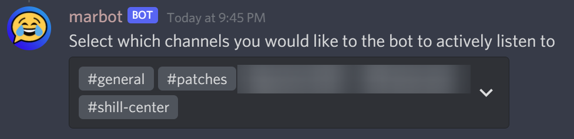
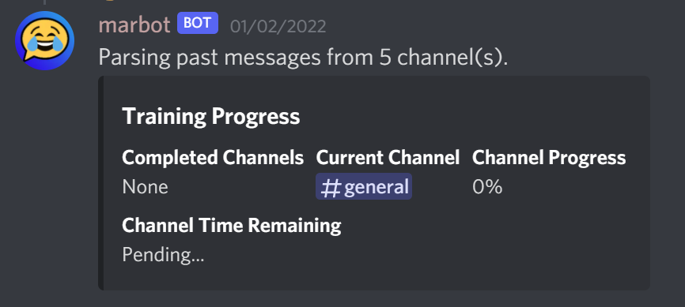

markov-discord
MarkBot for Discord
A Markov chain bot using markov-strings.
Usage
- Configure what channels you want the bot to listen/learn from:
- User:
/listen modify - Bot: 
- User:
- Train the bot in a lengthy text channel:
- User:
/train - Bot: 
- User:
- Ask the bot to say something:
- User:
/mark - Bot:

- User:
Training from a file
Using the json option in the /train command, you can import a list of messages.
An example JSON file can be seen here.
Setup
This bot stores your Discord server's entire message history, so a public instance to invite to your server is not available due to obvious data privacy concerns. Instead, you can host it yourself.
- Create a Discord bot application
- Under the "Bot" section, enable the "Message Content Intent", and copy the token for later.
- Setup and configure the bot using one of the below methods:
Docker
Running this bot in Docker is the easiest way to ensure it runs as expected and can easily recieve updates.
-
Open a command prompt and run:
docker run --restart unless-stopped -d -v /my/host/dir:/usr/app/config ghcr.io/claabs/markov-discord:latestWhere
/my/host/diris a accessible path on your system.--restart=unless-stoppedis recommended in case an unexpected error crashes the bot. -
The Docker container will create a default config file in your mounted volume (
/my/host/dir). Open it and add your bot token. You may change any other values to your liking as well. Details for each configuration item can be found here: https://claabs.github.io/markov-discord/classes/AppConfig.html -
Run the container again and use the invite link printed to the logs.
Windows
-
Install Node.js 16 or newer.
-
Download this repository using git in a command prompt
git clone https://github.com/claabs/markov-discord.gitor by just downloading and extracting the project zip from GitHub.
-
Open a command prompt in the
markov-discordfolder.# NPM install non-development packages
npm ci
# Build the Typescript
npm run build
# Initialize the config
npm start -
The program will create a
config/config.jsonin the project folder. Open it and add your bot token. You may change any other values to your liking as well. Details for each configuration item can be found here: https://claabs.github.io/markov-discord/classes/AppConfig.html -
Run the bot:
npm startAnd use the invite link printed to the logs.